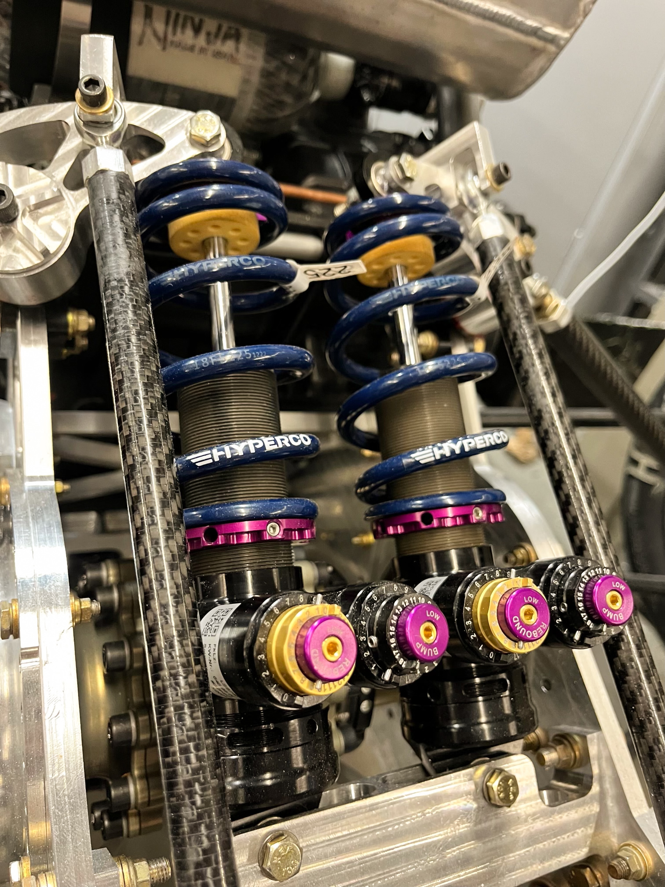
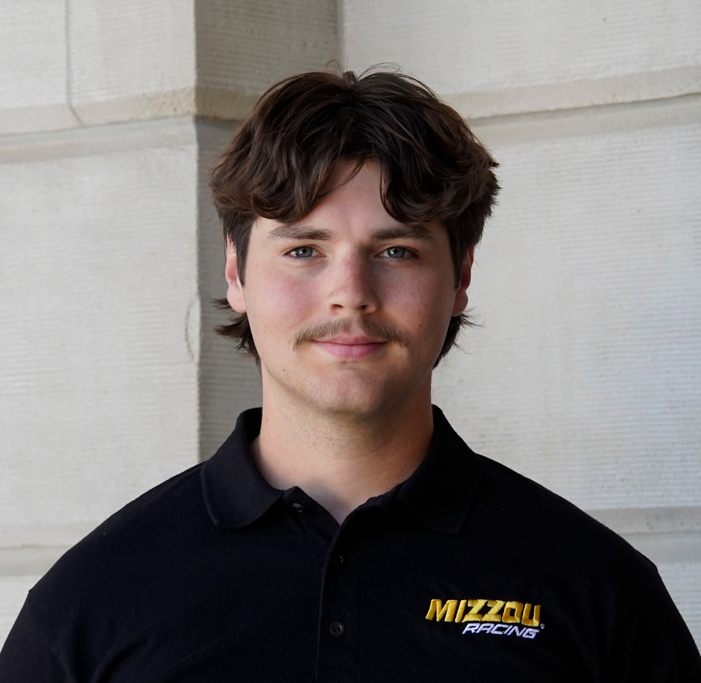
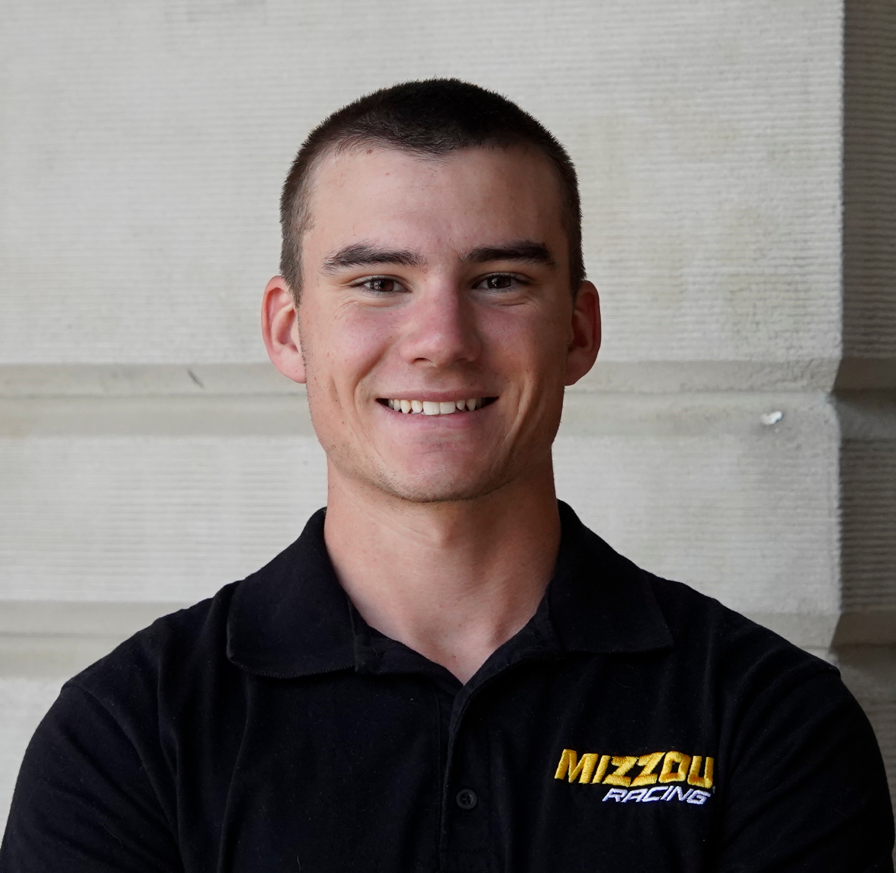

Our suspension and chassis subteams make up the vehicle dynamics team. We design and manufacture components in house with our manual and CNC machines. Some highlights of our suspension package are KW V5 dampers, adjustable anti-roll bars, and carbon fiber rods. The team adjusts the toe and camber for events to maximize performance through extensive testing.


Ryan Blanken is a senior Mechanical Engineering major. Having joined the team in Fall 2023 he studyed suspension geometry in previous seasons he was able to make great strides in updating designs for car #115. His main goal for the year is apply knowlege and lessons learned from car #115 to this season's car.
- Ryan Blanken

Dylan is a senior Mechanical Engineering major who joined the team in the fall of 2023. Since then Dylan has spent his time studying the development and fabrication of a Formula SAE chassis. Dylan's main goal for the year is to redesign the chassis to account for an EV tractive battery along with general improvments.
- Dylan Goldstein